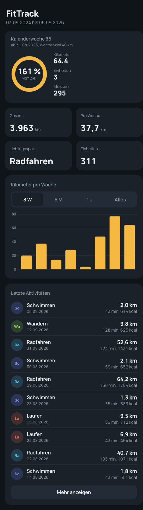
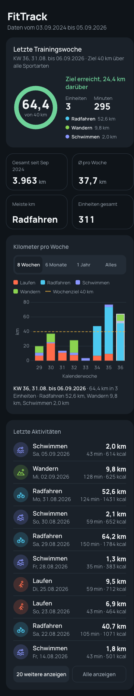
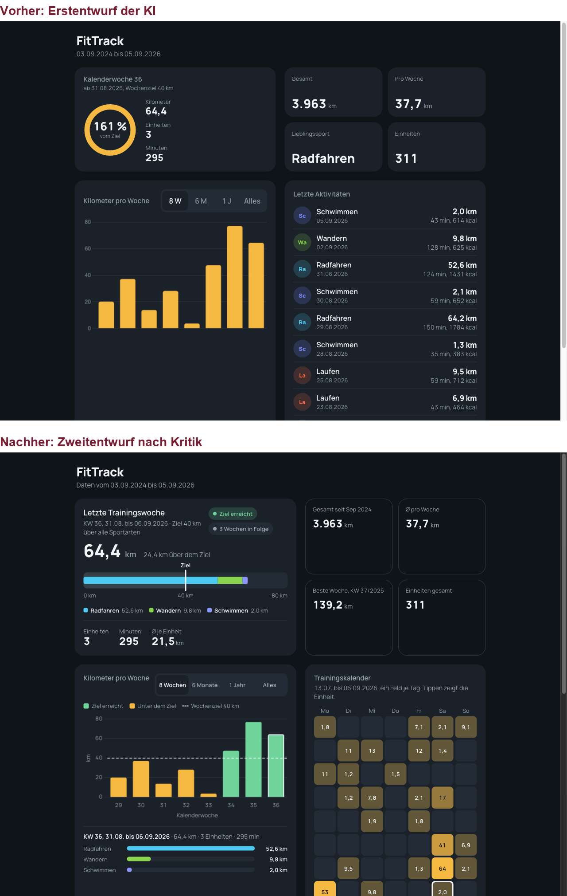

Die Botschaft
Tests sichern die Daten, nicht die Aussage.
Die 14 Tests aus Lab 01 bis 04 prüfen Status, Felder, Summen und Lückenwochen. Alles davon war richtig. Was
die Oberfläche aus diesen richtigen Zahlen macht, prüft kein Test. Das prüft nur ein Mensch mit einer Frage an
jedes sichtbare Element: Was bedeutet das, und stimmt es? Ein Modell kennt die Form eines
Fitness-Dashboards und füllt sie. Ob ein voller Ring, ein fehlendes Achsenlabel oder ein doppelt verwendetes
Wort etwas Wahres behauptet, fragt es nicht, solange niemand es dazu zwingt.
Der Moment im Sprint Review
Das Dashboard liegt auf dem Beamer. Die Gruppe hat Sprint 2 abgeschlossen, das Diagramm zeigt echte Daten aus
der API, die Buttons sind 44 Pixel hoch. Die Frage der Dozentin oder des Dozenten lautet nicht „Gefällt es
euch?“, sondern:
„Was bedeutet 161 %?“
Der Ring ist geschlossen. Bei 100 % wäre er auch geschlossen, bei 300 % ebenso. Die Grafik trägt oberhalb
des Ziels keine Information mehr. Die Zahl hat keine Einheit. Und die Karte heißt „Kalenderwoche 36“, obwohl
heute Donnerstag in KW 37 ist: Eine abgeschlossene Woche ist ein Ergebnis, kein Fortschritt. Drei falsche
Aussagen in einem Element, das alle Tests bestanden hat.
Die Gruppe soll die weiteren Befunde selbst finden, bevor die Tabelle unten eingeblendet wird. Fünf Minuten,
jede Person eine Zahl oder Grafik, dieselbe Frage.
Acht Befunde, keiner ein Rechenfehler
Das Muster
Alle acht Befunde sind Aussagefehler, kein einziger ein Rechenfehler. Genau deshalb fällt sie kein Test, und
genau deshalb fallen sie beim ersten Blick nicht auf: Die Zahlen stimmen, das Bild ist vertraut, das Gehirn
nickt.
Vorher und nachher
Dieselben Daten, dieselbe API bis auf ein Feld. Der Umbau ist fast vollständig Beschriftung, Deckelung und
Bezug.

Vorher: Ring geschlossen bei 161 %, Karte „Kalenderwoche 36“, Balken ohne Achse, Kürzel.

Nachher: Ergebnis statt Fortschritt, Kilometer statt Prozent, Achse, Legende, Ziellinie, Symbole.

Desktop, zwei Spalten: oben der erste Entwurf, unten der Stand nach US-7.
Was besser wurde
- Wochenkarte: „Letzte Trainingswoche, KW 36, 31.08. bis 06.09.2026 · Ziel 40 km über alle Sportarten“. Ring voll und grün, im Ring „64,4 von 40 km“, daneben „Ziel erreicht, 24,4 km darüber“, darunter Radfahren 52,6 km, Wandern 9,8 km, Schwimmen 2,0 km.
- Diagramm: Gestapelt je Sportart in den Sportfarben, Achse „Kalenderwoche“ mit Einheit „km“, gestrichelte Ziellinie, Legende. Die jüngste Woche ist umrandet und unter dem Diagramm beschrieben; ein Klick auf einen anderen Balken wechselt die Beschreibung. „Alles“ zeigt Monate.
- Kacheln: „Gesamt seit Sep 2024“, „Ø pro Woche“, „Meiste km“, „Einheiten gesamt“. Jeder Bezug steht dran, kein Wort bedeutet zweimal etwas anderes.
- Liste: Wochentag im Datum, Symbol je Sportart statt „Sc“, „20 weitere anzeigen“ und „Alle anzeigen“.
- Bedienung: Mindestschrift 13 px, Bedienelemente 44 px, Fokusring per Tastatur,
aria-pressed an den Umschaltern, sprechendes aria-label am Ring, eine für Screenreader sichtbare Tabelle mit den Diagrammwerten, helles und dunkles Thema.
Der Semantik-Review
Vor jeder Abnahme einer Oberfläche, einmal über jedes sichtbare Element. Fünf Minuten. Jeder Punkt ist erfüllt
oder bewusst zurückgestellt, nichts dazwischen. Die Liste steht auch in docs/checklisten.md.
Nachrechnen am Beispiel: Die Chips der Wochenkarte müssen dieser Abfrage entsprechen. Sie können sie im Lab
auf der Startseite gegen die echte Datenbank laufen lassen.
SELECT sportart, ROUND(SUM(distanz_km), 1) AS km
FROM v_workout
WHERE datum BETWEEN '2026-08-31' AND '2026-09-06'
GROUP BY sportart
ORDER BY km DESC;
Zwei Prompts, die solche Fehler verhindern
1. Bedeutung vor Code
Der wirksamste Schutz ist eine Tabelle vor dem Code: Für jedes Element Aussage, Einheit, Zeitbezug und Zustände,
vom Modell vorgeschlagen, von der Gruppe bestätigt. Erst danach darf es bauen. Die sieben Regeln sind die acht
Befunde, in Anforderungen übersetzt. Sie passen in jeden Frontend-Prompt des Kurses.
Wir bauen das Dashboard von FitTrack (Vanilla JS, Chart.js 4, API-Antworten
siehe unten). Bevor du Code schreibst, lege die Bedeutung jedes Elements
fest. Gib eine Tabelle mit den Spalten
Element | zeigt | Einheit | Zeitbezug | Zustände (0 %, 100 %, über 100 %,
keine Daten) | Beschriftung im Bild.
Regeln, die die Tabelle erfüllen muss:
1. Jede Zahl trägt Einheit und Bezug, z. B. "64,4 km, KW 36, 31.08. bis 06.09.".
2. Ein Fortschrittselement zeigt nur laufende Zeiträume. Abgeschlossene
Zeiträume heißen Ergebnis. Werte über 100 % werden gedeckelt und als
"Ziel erreicht, +x km" beschriftet.
3. Jede Achse hat Titel und Einheit, jede Farbe steht in einer Legende.
4. Kein Begriff bedeutet an zwei Stellen etwas Verschiedenes.
5. Keine Abkürzungen, die nicht im Bild erklärt sind.
6. Beschreibe, wie die Ansicht bei 0, 1 und 105 Datenpunkten aussieht.
7. Schrift mindestens 13 px, Bedienelemente 44 px, aria-pressed an
Umschaltern, sprechende aria-label, helles und dunkles Thema.
Erst wenn ich die Tabelle bestätigt habe, schreibst du den Code.
API-Antworten: [Beispiel von /api/stats und /api/stats/wochen einfügen]
2. Selbstprüfung nach jedem Vorschlag
Bevor jemand den Code anfasst. Das findet die offensichtlichen Fälle: den Ring, die fehlende Achse, das
doppelte Wort. Es ersetzt den Blick der Gruppe nicht, weil das Modell dieselben Formen für richtig hält, die
es gerade gebaut hat.
Prüfe deinen Vorschlag wie ein kritischer Designer, der ihn zum ersten
Mal sieht. Gehe jedes sichtbare Element durch und beantworte: Was
bedeutet es? Woher kommt der Wert? Was zeigt es bei 0, bei mehr als
100 %, bei 105 Datenpunkten? Nenne jede Stelle, an der die Darstellung
mehr behauptet als die Daten hergeben, und schlage die Korrektur vor.
Lobe nichts. Wenn du nichts findest, sage das und begründe es je Element.
Was der zweite Prompt findet, und was nicht
Er findet den geschlossenen Ring, die Zahl ohne Einheit, die fehlende Achse, das doppelte Wort. Er findet
nicht, ob 40 km über alle Sportarten ein sinnvolles Ziel ist, ob die Woche wirklich vorbei ist oder ob jemand
die Ansicht in zehn Sekunden erklären kann. Das bleibt bei der Gruppe.
US-7 und ihr Test
Aus dem Review wird eine Story, damit der Umbau denselben Weg geht wie jede andere Änderung: Test rot, Prompt,
Prüfen, Code, Test grün, Commit mit Story-Bezug, Tag us-7.
US-7: Als Nutzer möchte ich, dass jede Zahl und jede Grafik im Dashboard
genau das aussagt, was die Daten hergeben, damit ich mich nicht
auf ein schönes, aber falsches Bild verlasse.
Akzeptanz: Der Ring geht nie über 100 %; eine abgeschlossene Woche
heißt Ergebnis, nicht Fortschritt; jede Achse und jede Farbe ist
beschriftet; GET /api/stats/wochen liefert je Woche je_sportart;
Schrift mindestens 13 px, Umschalter mit aria-pressed, helles und
dunkles Thema.
Das Backend liefert die Kilometer je Sportart und Woche, damit das Frontend nichts selbst zusammenrechnet.
Erwartungswerte aus dem Fixture, von Hand: KW 23 hat Laufen 13,0, Radfahren 20,0, Schwimmen 1,5; Probe
13,0 + 20,0 + 1,5 = 34,5, die bekannte Wochensumme.
def test_wochen_je_sportart():
wochen = client.get("/api/stats/wochen").json()
assert wochen[0]["je_sportart"] == {"Laufen": 13.0, "Radfahren": 20.0, "Schwimmen": 1.5}
assert wochen[1]["je_sportart"] == {}
assert wochen[2]["je_sportart"] == {"Laufen": 13.0, "Radfahren": 30.0, "Wandern": 10.0}
Ein bestehender Test ändert sich
test_wochen_anzahl_und_luecken vergleicht KW 24 als ganzes Dictionary und bekommt nun
"je_sportart": {} dazu. Das ist eine bewusste Änderung der Spezifikation durch die Story, kein
„Test passend machen“. Der Unterschied: Die Story kam zuerst, der Test folgt ihr. Anders herum wäre es
Betrug am eigenen Prüfsystem.
Übungen
Drei Übungen: die Fehler verstehen, sie den Prüfpunkten zuordnen, den Review am eigenen Dashboard durchführen.
Zusammenfassung
- Tests sichern die Daten, nicht die Aussage. Grüne Tests sagen nichts darüber, ob eine Grafik die Wahrheit zeigt.
- Schöne Ergebnisse verdienen mehr Misstrauen, nicht weniger, weil sie die Prüfung abkürzen.
- Acht Befunde im ersten Entwurf, keiner ein Rechenfehler: Ring, Zeitbezug, Achse, Kürzel, doppelte Wörter, Bedienbarkeit.
- Der Semantik-Review stellt an jedes Element dieselbe Frage: Was bedeutet das, und stimmt es?
- Bedeutung vor Code: Der Prompt lässt das Modell erst eine Tabelle vorlegen, dann bauen. Ein zweiter Prompt lässt es den eigenen Vorschlag zerlegen.
- Aus dem Review wird eine Story mit Test und Tag, kein stilles Nachbessern.